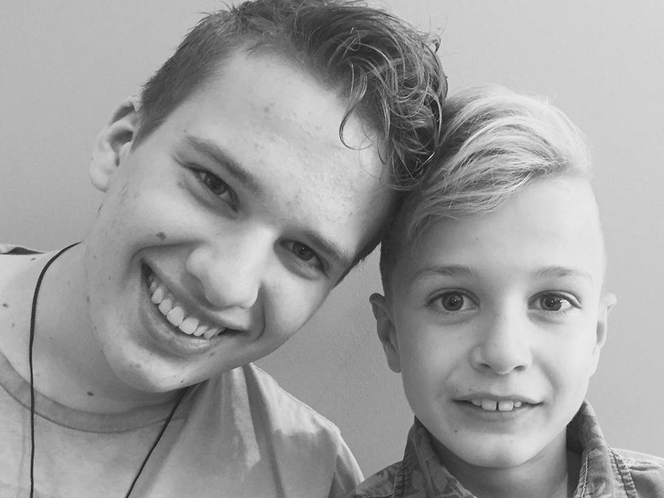

Luuk Ruigendijk
Over mij
Ik ben Luuk Ruigendijk, 17 jaar oud en heb een broertje van 11 jaar. Ik ben dit jaar begonnen met het leren over programmeren en het maken van webpaginas. Mijn hobbies zijn badminton, youtube kijken, videogames en programmeren. Ik ben rustig en kan goed met mensen samenwerken. Als iemand een andere mening heeft dan ik, dan zorg ik ervoor dat we tot een conclusie kunnen komen waar we beiden tevreden over kunnen zijn. Ik werk bij de supermarkt agrimarkt en krijg sinds begin dit schooljaar les over programmeren.
